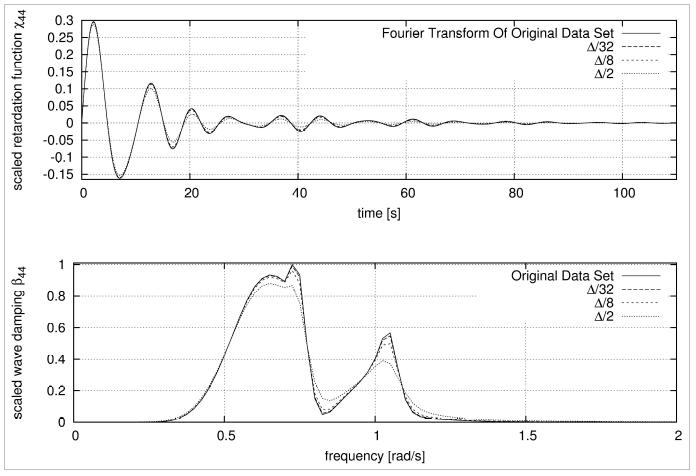
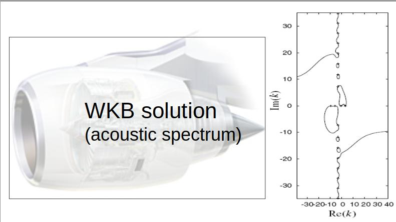

Applied Mathematician & Computational Physicist
Bridging the gap between strict mathematical physics and breakthrough industrial automation. Throughout my career spanning premium global universities (such as University College London) and heavy engineering sectors, I have engineered advanced computational engines, non-linear simulators, and automated control pipelines used in complex real-world physical deployment workflows.
Equations of motion

Рис 4. Численная верификация масштабированной функции последействия и сохранения неотрицательности коэффициентов волнового демпфирования.The Pridmore-Brown eigenvalue problem and Myers' boundary layer impedance condition.

Fig 5. Cylindrical duct geometry.